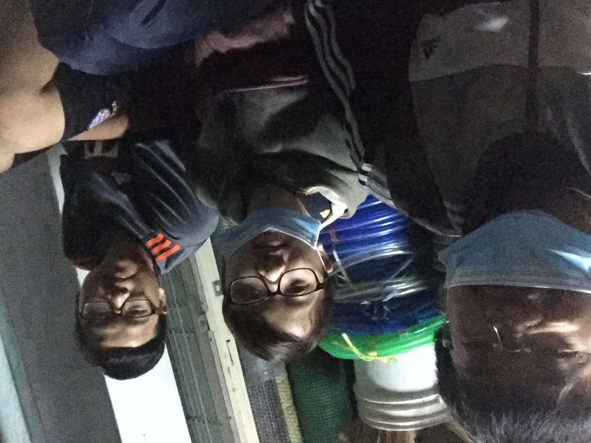
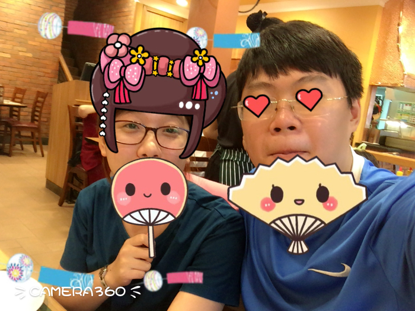

Quay về Trang Chủ
 Tháng của ngày lễ giáng sinh và lễ cuối năm, dù bé vẫn còn làm rất nhiều nhưng ông xã đã kịp tạo bất ngờ nhỏ cho bà xã :3. Ông xã thấy bà xã cười tít mắt khóc thật lâu ông xã yêu bà xã lắm lắm bà xã ngoan ngoan của ông xã :3. Rùi ngày cuối cùng của năm cũng đến thật may mắn khi ông xã và bà xã kịp xem pháo bông pháo lade và tối hum ấy được ôm bà xã ngủ thiệt ngon luôn :3
Tháng của ngày lễ giáng sinh và lễ cuối năm, dù bé vẫn còn làm rất nhiều nhưng ông xã đã kịp tạo bất ngờ nhỏ cho bà xã :3. Ông xã thấy bà xã cười tít mắt khóc thật lâu ông xã yêu bà xã lắm lắm bà xã ngoan ngoan của ông xã :3. Rùi ngày cuối cùng của năm cũng đến thật may mắn khi ông xã và bà xã kịp xem pháo bông pháo lade và tối hum ấy được ôm bà xã ngủ thiệt ngon luôn :3
THÁNG 1
 Năm mới cũng đã tới và kèm theo nó là một chuyến đi về Nha Trang thân thương :3 lần đầu ra mắt ba mẹ của bà xã lúc đầu ông xã cũng đôi phần lo ngại nhưng rồi biết thêm về gia đình bà xã. Không chỉ đó vào tết ông xã lại được về với bà xã đi biển và dạo chơi Nha Trang :3 ahihi.
THÁNG 2
 Valentine đầu được bên bà xã dẫn dắt bà xã đi khám phá Sài Gòn mùa yêu thương :3 Happy Valentine to my little honey :3